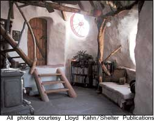

The idea of a home extends beyond the strict definition of a house, and this unique Japanese barn/root cellar is a great example of how an inconspicuous shed can become a one-of-a-kind creation and an inspiration to others.